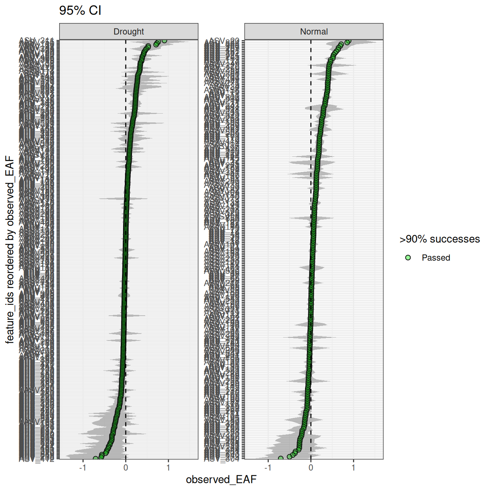
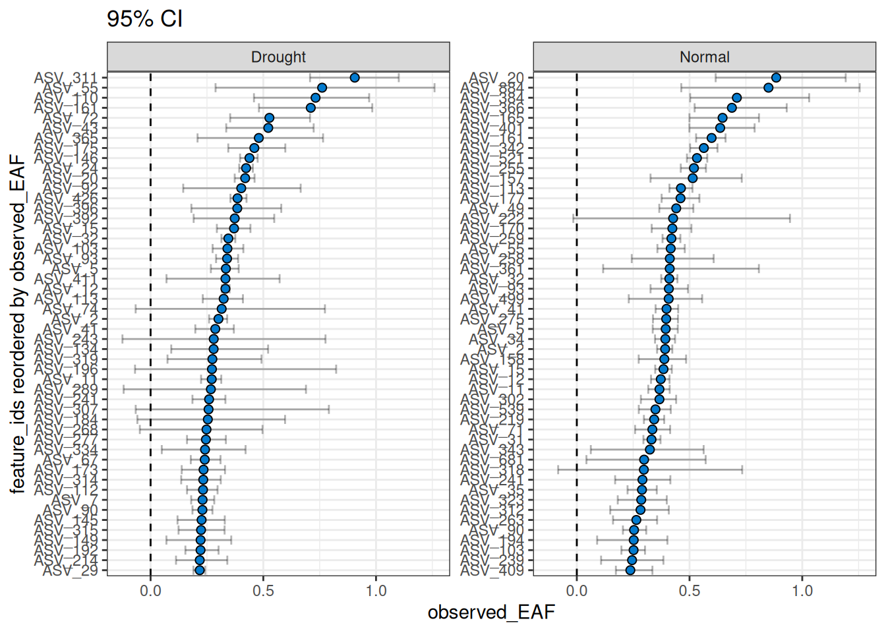
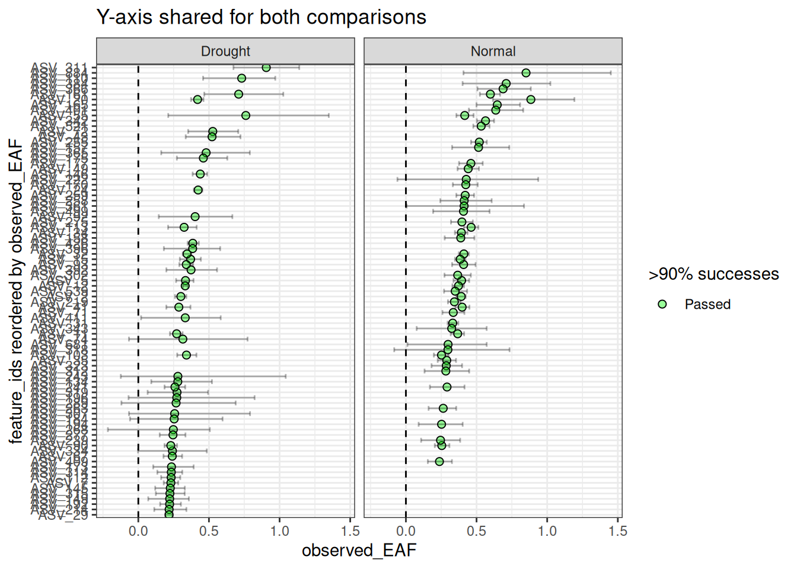
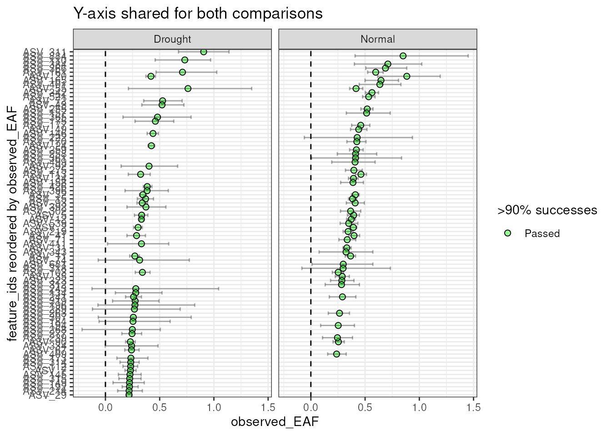
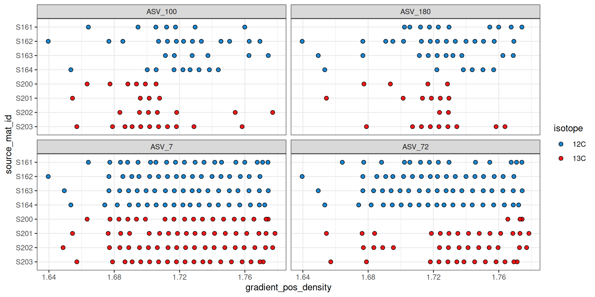
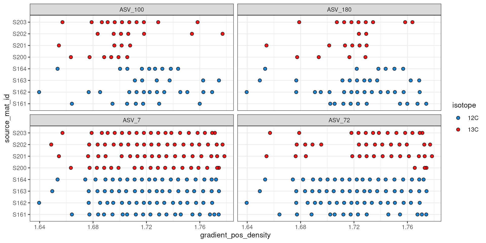
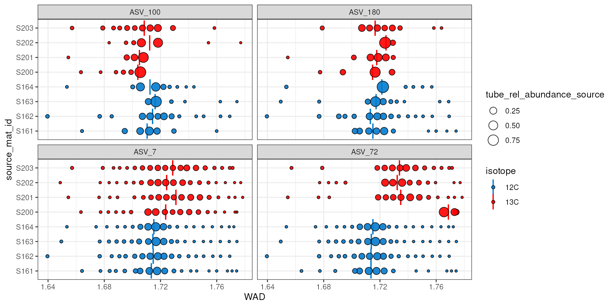

library(dplyr)
library(ggplot2)
library(patchwork)
library(qSIP2)
packageVersion("qSIP2")
#> [1] '0.20.3.9000'Background
After your qsip_data object has been filtered and
resampled, the last step is to calculate the excess atom fraction (EAF)
values for each feature. The EAF is a measure of the proportion of a
feature that is derived from the labeled substrate. For each of the
resamples, the run_EAF_calculations() runs equations from
Hungate et al. 20151 to calculate EAF values, and the
summarize_EAF_values() function calculates the mean and
confidence intervals for each feature.
Getting EAF values
We can start by making a qsip_data object with multiple
comparisons using code from the vignette("multiple_objects)
vignette. This will make two comparisons (“Normal” and “Drought”) that
include the output from run_EAF_calculations().
qsip_list = get_comparison_groups(example_qsip_object, group = "Moisture") |>
dplyr::select("group" = Moisture, "unlabeled" = "12C", "labeled" = "13C") |>
run_comparison_groups(example_qsip_object,
seed = 99,
allow_failures = TRUE)
#> Finished groups ■■■■■■■■■■■■■■■■ 50%
#> Finished groups ■■■■■■■■■■■■■■■■■■■■■■■■■■■■■■■ 100%
#> Plotting
Plotting the results shows a wide range of EAF values between the two comparisons.
plot_EAF_values(qsip_list)
#> Confidence level = 0.9
The 90% confidence interval is calculated by default, but this can be
modified and added to the plot with the confidence and
error arguments.
plot_EAF_values(qsip_list,
confidence = 0.95,
error = "ribbon",
title = "95% CI")
#> Confidence level = 0.95
The number of features can be filtered to include the n with the highest EAF.
plot_EAF_values(qsip_list,
top = 50,
error = "bar",
title = "95% CI")
#> Confidence level = 0.9
By default, the facets do not share the same y-axis so each
comparison are sorted from highto low independently. But, if you want to
compare the EAF values between the two comparisons, you can set
shared_y = TRUE. Keep in mind that the top n is
calculated for each, so you may end up with more than n
features in the plot if there isn’t much overlap between the two
comparisons.
plot_EAF_values(qsip_list,
top = 50,
shared_y = TRUE,
error = "bar",
title = "Y-axis shared for both comparisons")
#> Warning: When setting <shared_y> to TRUE and also passing a value to <top>,
#> there will likely be missing data in the plots if a feature is in the top n of
#> one comparison, but not in the other.
#> Confidence level = 0.9
As seen in the warning above, a current limitation when using
shared_y = TRUE together with the top argument
is that only the top n will be shown per facet, giving a blank
value for any features that are not in the top n for that
comparison. But, this doesn’t mean they don’t have EAF values or that
the feature was not found. I hope to fix this limitation in the
future.
As a reminder from the resampling vignette, the “successess” in the
legend and colors refer to whether the resampling was successful above a
certain threshold. The plot will display whether they pass/fail if the
allow_failures argument is set to TRUE in the
resampling step.
Dataframe
You can also return the results as a dataframe using
summarize_EAF_values() and a desired confidence (default is
90%).
summarize_EAF_values(qsip_list)#> Confidence level = 0.9| group | feature_id | observed_EAF | mean_resampled_EAF | lower | upper | labeled_resamples | unlabeled_resamples | labeled_sources | unlabeled_sources |
|---|---|---|---|---|---|---|---|---|---|
| Drought | ASV_1 | -0.0491540 | -0.0483554 | -0.1082032 | 0.0087336 | 1000 | 1000 | 4 | 4 |
| Normal | ASV_1 | 0.0004555 | 0.0000135 | -0.0325729 | 0.0356580 | 1000 | 1000 | 3 | 4 |
| Drought | ASV_10 | 0.0547586 | 0.0550897 | 0.0344674 | 0.0747572 | 1000 | 1000 | 4 | 4 |
| Normal | ASV_10 | 0.1121811 | 0.1116458 | 0.0713690 | 0.1506676 | 1000 | 1000 | 3 | 4 |
| Drought | ASV_100 | -0.1116096 | -0.1110421 | -0.1681262 | -0.0503753 | 1000 | 1000 | 4 | 4 |
| Normal | ASV_100 | 0.0090370 | 0.0088377 | -0.0523892 | 0.0703022 | 1000 | 1000 | 3 | 4 |
More details
Individual features can be inspected further to help understand why their EAF values were calculated as they were. As an example, we will pick 4 features that had a range of EAF values for the “Drought” comparison, one each with high, medium, low, and negative EAF values.
features = c("ASV_72", "ASV_7", "ASV_180", "ASV_100")
summarize_EAF_values(qsip_list$Drought) |>
filter(feature_id %in% features)#> Confidence level = 0.9| feature_id | observed_EAF | mean_resampled_EAF | lower | upper | labeled_resamples | unlabeled_resamples | labeled_sources | unlabeled_sources |
|---|---|---|---|---|---|---|---|---|
| ASV_72 | 0.5271129 | 0.5246305 | 0.3529541 | 0.7072885 | 1000 | 1000 | 4 | 4 |
| ASV_7 | 0.2305506 | 0.2307068 | 0.1799998 | 0.2823904 | 1000 | 1000 | 4 | 4 |
| ASV_180 | 0.0308346 | 0.0318743 | -0.0425104 | 0.0994295 | 1000 | 1000 | 4 | 4 |
| ASV_100 | -0.1116096 | -0.1110421 | -0.1681262 | -0.0503753 | 1000 | 1000 | 4 | 4 |
Using a combination of plot_feature_curves() and
plot_feature_resamplings() we can plot these 4 features
(with some help from the patchwork library).
a = plot_feature_curves(qsip_list$Drought, features) + facet_wrap(~feature_id, nrow = 1, scales = "free")
b = plot_feature_resamplings(qsip_list$Drought, features, intervals = "bar", confidence = 0.95) + facet_wrap(~feature_id, nrow = 1, scales = "free")
(a / b) +
plot_layout(axes = "collect") +
plot_annotation(tag_levels = 'A')
For ASV_7 and ASV_72, it is clear in “A” that the 13C labeled isotope has a nice shift compared to the unlabeled 12C sources. Indeed, the resampling results summarized in “B” also show a clear distinction with non-overlapping confidence intervals. ASV_180, which had an EAF value close to zero shows a much smaller density shift between the unlabeled and labeled samples, and the resampling results show overlapping confidence intervals.
ASV_100, on the other hand, shows a negative EAF value. In “A” we can see the peaks of the 13C do appear shifted left of the 12C, and although the confidence intervals do not overlap, we don’t expect to see lower 13C density values compared to 12C. In “A”, it appears two of the 13C lines abruptly end, which may be a sign that ASV_100 doesn’t occur in as many fractions as necessary.
The plot_feature_occurrence() function can be used to
see how often a feature occurs in the samples and give some idea about
whether they span the range of densities, are found in fractions close
or far from one another, and how the calculated WAD value is affected by
these occurrences.
plot_feature_occurrence(qsip_list$Drought, features)
The plot above does show that ASV_100 stops appearing in some labeled sources after a density of ~1.7. With more arguments we can add the WAD and relative abundance values to the make the following figure. Here, the size of the circle represents the relative abundance of the feature in the sample, and for ASV_100 we see the most abundant fraction does heavily influence the calculated WAD value (vertical bar). So, although missing data on the “right side” of the curve may lead to issues, it doesn’t seem to affect the WAD value for ASV_100, assuming the peak of the values are in that most abundant fraction.
plot_feature_occurrence(qsip_list$Drought,
features,
show_wad = TRUE,
scale = "source")
The above plot can also help identify additional potential issues.
For example, ASV_72 was one of the features with the highest EAF values,
but it looks like source S200 only has it in the extremely heavy
fractions, and it has a calculated WAD that is much higher than the
other 13C sources. When we ran run_comparison_groups() at
the very beginning we didn’t define a minimum number of fractions, so
the default of 2 was used. We might, however, consider increasing the
minimum number of labeled fractions required to remove sources with
feature occurrences like ASV_72 in source S200.